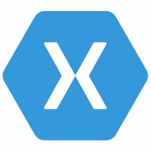
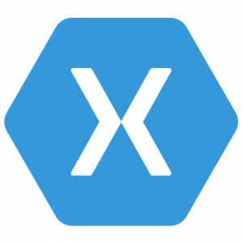

Qu'en est-il des mobiles?
Avec l’évolution des technologies, le portable prend une place de plus en plus grande dans la vie des utilisateurs surtout lorsque ceux-ci cherchent à se connecter à internet. De part sa petite taille et sa simplicité d’utilisation, c’est devenu un moyen privilégié pour rester connecté. Mais malgré son utilité et sa simplicité d’utilisation, réussir à coder des sites ou applications web pour mobile est une toute autre paire de manches. En effet, la taille des écrans étant très différentes des ordinateurs et le fonctionnement étant tout autre, réussir à adapter les techniques classiques n’est pas forcément évident.
Evolution du web mobile
Le web mobile est apparu en 1999 avec le protocole WAP (Wireless Application Protocol). C’est un protocole qui se base sur le langage HTML pour adapter les formats de sites web classiques aux formats des petits écrans de téléphone. Ensuite est apparu en 2005 la technologie haut débit Wi-FI (Wireless Fidelity) pour l’accès à internet qui permet enfin un accès rapide à internet. Puis sont apparu les technologies EDGE, UMTS (3G) et LTE (4G) qui permettent un accès presque partout à internet.

 

Frameworks hybrides
Les frameworks classiques sont prévus pour un usage classique sur ordinateur mais il existe aussi des frameworks hybrides qui permettent de développer un site web qui sera tout aussi accessible que ce soit sur ordinateur ou bien sur mobile. Les applications développées à partir de ces frameworks sont appelées des applications hybrides qui possèdent une visualisation tout aussi bien pour ordinateur que pour mobile. Pour citer les frameworks hybrides les plus connus on pourrait parler d’Ionic, de React native ou encore de Xamarin.
Application mobile first
Les applications mobiles first sont des applications développées dans un premier temps pour les mobiles. Puis une fois l’application pour mobile bien développée, une version pour ordinateur est développé mais sans vraiment que l’entreprise y accorde beaucoup de temps. En effet le but principal de ces applications est d’être utilisée sur mobile et non sur ordinateur. Mais l’entreprise possédant déjà beaucoup de code, il lui est alors facile et rapide de modifier un peu le code pour créer une version bureau en plus.
Pour citer quelques exemples, on a sworkit: en Ionic et Instagram: en React native.
Il existe aussi des applications mobile-only, ce sont des applications qui ont été développées uniquement pour utilisation sur mobile.